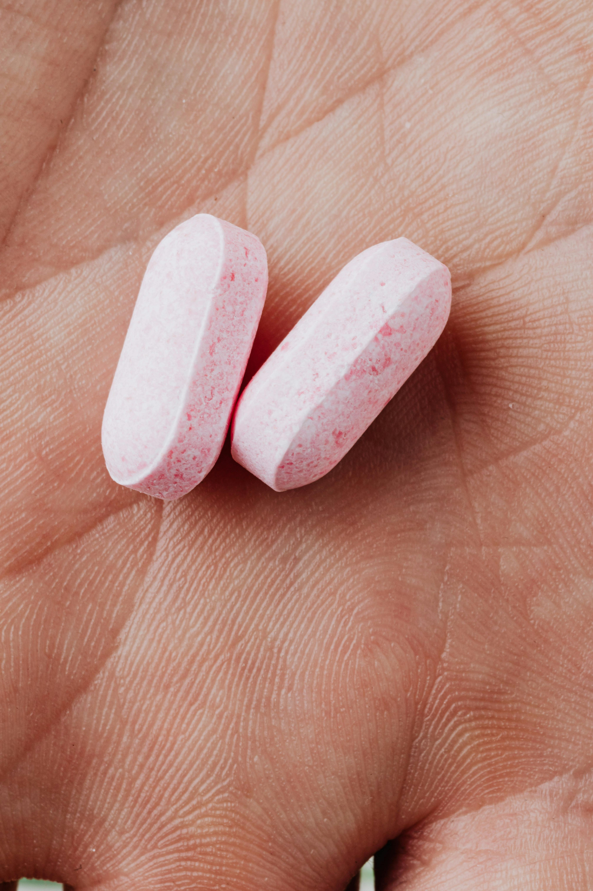

Tratamiento que consiste en microinyecciones de vitaminas y minerales en el cuero cabelludo para estimular el crecimiento del cabello y mejorar su salud.
Tratamiento que utiliza la sangre del paciente para extraer el plasma rico en plaquetas y aplicarlo en el cuero cabelludo para estimular el crecimiento del cabello y mejorar su salud.

Combina medicamentos específicos para fortalecer el cabello y combatir la caída. Al aplicar directamente en el cuero cabelludo, se estimulan los folículos, promoviendo un crecimiento más fuerte y saludable.
